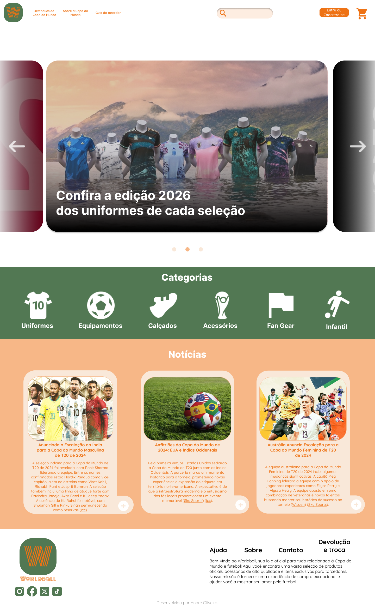

Olá, sou o André: um designer UX e desenvolvedor front-end.
Ajudo empresas a projetar produtos digitais intuitivos e desenvolver o visual de sites.
Projetos
WorldBall
Design desenvolvido para o público que consome e vibra na torcida da Copa do Mundo.

Fokus
Fokus é uma aplicação desenvolvida para ajudar você a manter o foco e aumentar sua produtividade utilizando a técnica Pomodoro.
Quiz para Programadores
O quiz oferece perguntas sobre linguagens de programação, conceitos básicos e técnicas, testando seus conhecimentos de forma divertida e educativa.